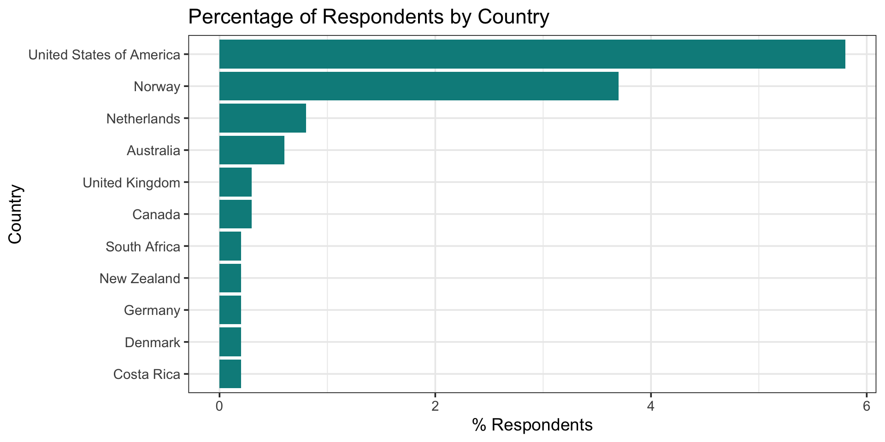
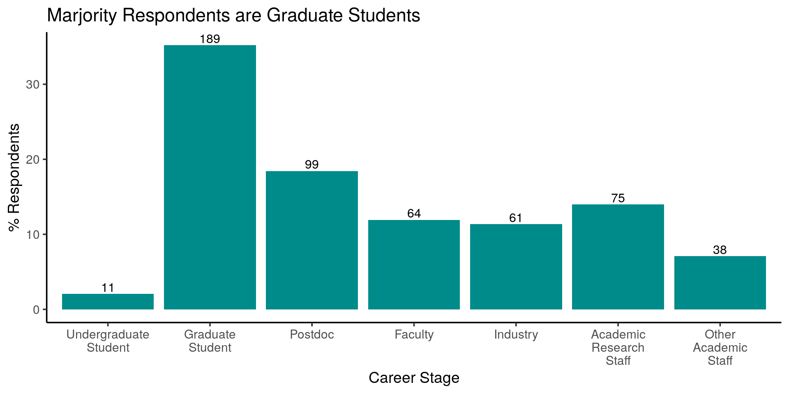
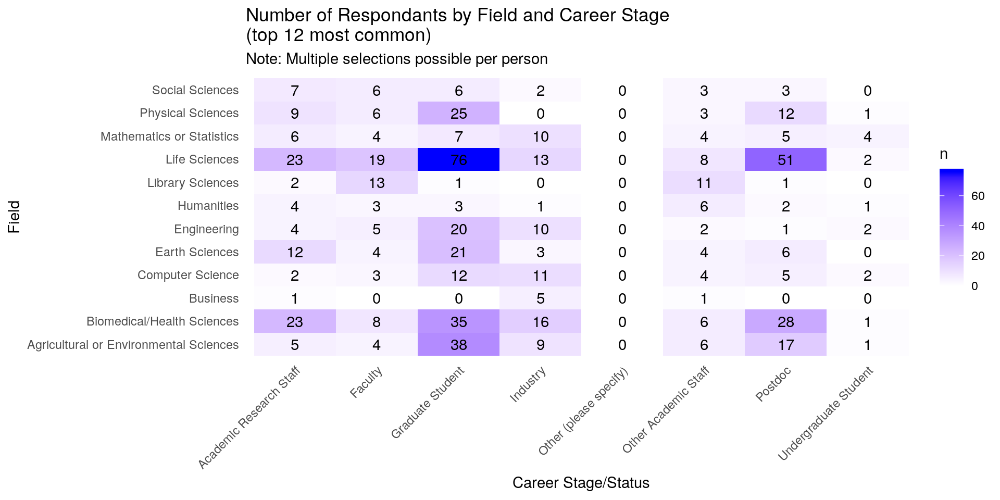
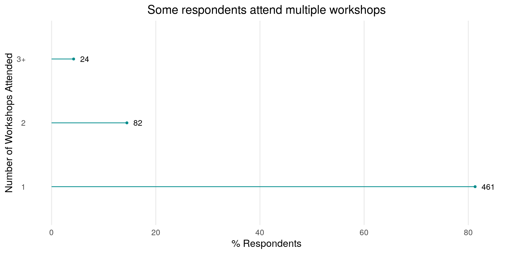
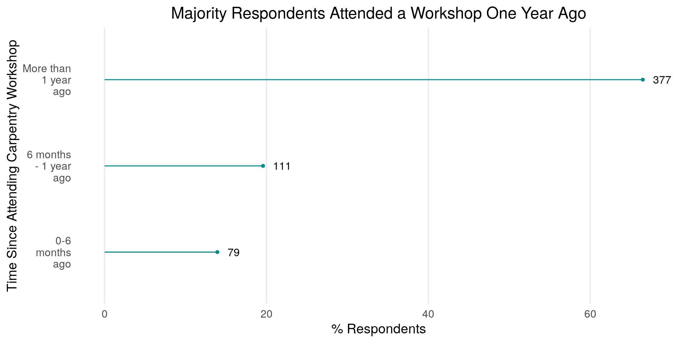
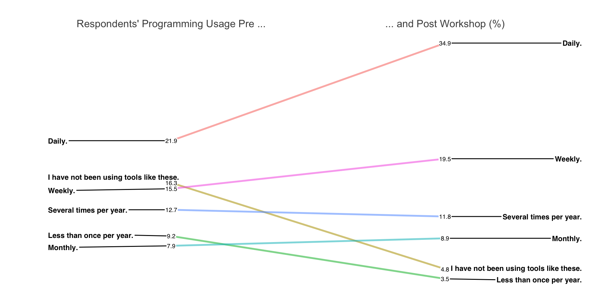
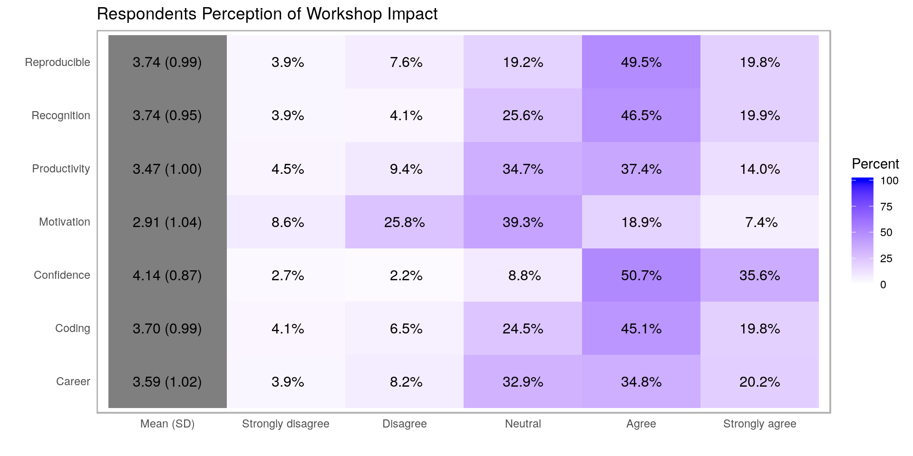
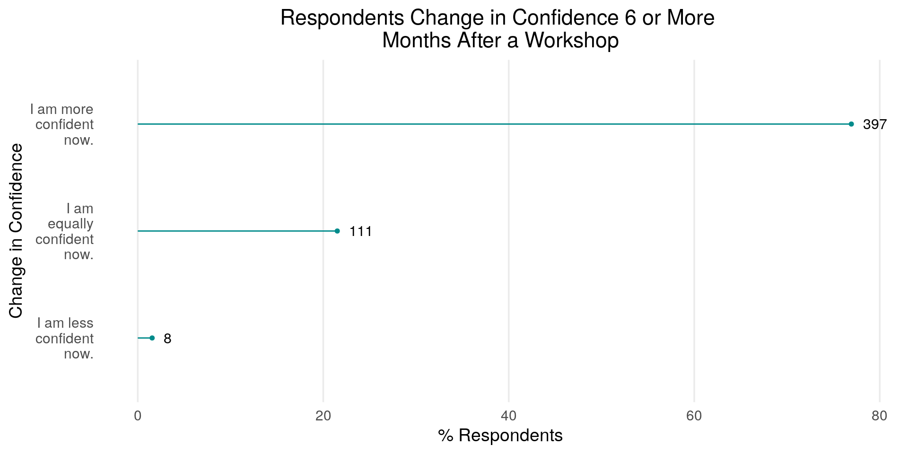

To date, 621 learners have completed the Carpentries Long-Term Impact Survey between March 22, 2017 and May 29, 2018. The average amount of time spent completing this survey is six minutes, and it carries an 80% completion rate. The survey was created in March 2017, and data is collected bi-annually. The results of this analysis are cumulative. We invite the community to run their own analyses. All of the data and source code are available on GitHub.
A special thanks to Ben Markwick, François Michonneau and others who helped write the code used in this report.
This section includes demographics for survey respondents broken down by:

| Respondents Field of Research/Work/Study | n | % |
|---|---|---|
| Life Sciences | 197 | 35.9 |
| Biomedical/Health Sciences | 122 | 22.2 |
| Agricultural or Environmental Sciences | 88 | 16.0 |
| Physical Sciences | 61 | 11.1 |
| Earth Sciences | 52 | 9.5 |
| Engineering | 47 | 8.6 |
| Mathematics or Statistics | 44 | 8.0 |
| Computer Science | 43 | 7.8 |
| Library Sciences | 30 | 5.5 |
| Social Sciences | 28 | 5.1 |
| Humanities | 20 | 3.6 |
| Business | 8 | 1.5 |

Provided below is a table of participant counts in each category. Multiple selection was possible.

Gender Identity and Racial/Ethnic Identity was added to the survey during the second round of data collection, so these numbers do not reflect the cumulative amount of respondents.
| Gender Identity | n | % |
|---|---|---|
| Female | 22 | 69 |
| Male | 10 | 31 |
| Racial/Ethnic Identity | n | % |
|---|---|---|
| Asian | 6 | 18 |
| Black or African American | 3 | 9 |
| Hispanic or Latino(a) | 2 | 6 |
| I prefer not to say. | 3 | 9 |
| White | 20 | 59 |
This section includes the following:


| Workshop Respondents Attended | n | % |
|---|---|---|
| Data Carpentry | 24 | 30 |
| Library Carpentry | 5 | 6 |
| Software Carpentry | 48 | 60 |
| I don’t know. | 3 | 4 |
| Learners Taking Survey for First Time | n | % |
|---|---|---|
| Yes | 86 | 88 |
| No | 3 | 3 |
| I don’t know. | 9 | 9 |
Learners were asked to check all that applies to indicate what content was covered at the last Carpentries workshop they completed. The tables below provide this information, and combinations of tools covered most often.
| Content Covered in Respondents Workshops | n | % |
|---|---|---|
| Git | 411 | 26 |
| Python | 329 | 21 |
| Unix Shell | 327 | 21 |
| R | 229 | 15 |
| SQL | 148 | 9 |
| OpenRefine | 38 | 2 |
| I don’t remember. | 32 | 2 |
| Spreadsheets | 27 | 2 |
| Cloud Computing | 17 | 1 |
| MATLAB | 6 | 0 |
| Mercurial | 3 | 0 |
| Frequency of Tools Covered | n | % |
|---|---|---|
| Git Python Unix Shell | 105 | 16.9 |
| Git Python | 44 | 7.1 |
| Git Python SQL Unix Shell | 41 | 6.6 |
| Git R Unix Shell | 35 | 5.6 |
| Git R | 25 | 4.0 |
| Git Python R Unix Shell | 21 | 3.4 |
| Git Unix Shell | 19 | 3.1 |
| R | 19 | 3.1 |
| Git Python SQL | 17 | 2.7 |
| Python | 14 | 2.3 |
We are interested in knowing what behaviors learners adopt as a result of completing a Carpentries workshop. Respondents were asked to check all that apply.
| Behaviors Respondents Adopted | n | % |
|---|---|---|
| Using programming languages like R or Python, or the command line to automate repetitive tasks. | 312 | 66.2 |
| Using version control to manage code. | 208 | 44.2 |
| Reusing code. | 201 | 42.7 |
| Sharing code or data publicly on places like GitHub or FigShare. | 147 | 31.2 |
| Using databases, scripts and queries to manage large data sets. | 143 | 30.4 |
| Transforming step-by-step workflows into scripts or functions. | 137 | 29.1 |
| Using version control to collaborate online (in public or private repositories). | 136 | 28.9 |
| Developing a data management and analysis plan. | 84 | 17.8 |
The table below provides behaviors adopted by career stage..
| Behaviors | Academic Research Staff | Faculty | Graduate Student | Industry | Postdoc | Undergraduate Student |
|---|---|---|---|---|---|---|
| Developing a data management and analysis plan. | 10.7 | 14.1 | 17.5 | 21.3 | 12.1 | 0.0 |
| Improving data management and project organization. | 40.0 | 50.0 | 39.7 | 45.9 | 40.4 | 0.0 |
| Reusing code. | 38.7 | 32.8 | 37.6 | 36.1 | 34.3 | 18.2 |
| Sharing code or data publicly on places like GitHub or FigShare. | 28.0 | 26.6 | 23.8 | 29.5 | 26.3 | 27.3 |
| Transforming step-by-step workflows into scripts or functions. | 26.7 | 17.2 | 28.0 | 26.2 | 27.3 | 18.2 |
| Using databases, scripts and queries to manage large data sets. | 22.7 | 18.8 | 25.9 | 29.5 | 31.3 | 9.1 |
| Using programming languages like R or Python, or the command line to automate repetitive tasks. | 61.3 | 48.4 | 60.8 | 59.0 | 58.6 | 27.3 |
| Using version control to collaborate online (in public or private repositories). | 26.7 | 29.7 | 18.5 | 45.9 | 21.2 | 36.4 |
| Using version control to manage code. | 44.0 | 39.1 | 31.7 | 60.7 | 31.3 | 27.3 |
Compared to before completing a Carpentries workshop, we want to know how often respondents used programming languages (R, Python, etc.), databases (Access, SQL, etc.), version control software and/or the shell. Below we compare pre/post programming usage.

The statements below reflect ways in which completing a Carpentries may impact learners. We asked respondents to rate level of agreement with these statements:
The heatmap below provides a breakdown of responses.

We are also interested in understanding what impact our workshops have on respondents long-term. This includes the following:
We asked respondents to rate their change in confidence in the tools that were covered during their Carpentries workshops compared to before the workshop. The figure below provides a synopsis.

If respondents are using the tools they learned in a Carpentries workshop, we want to know how they are helping. Respondents were asked to check all that apply.
| How Tools Covered Help Respondents | n | % |
|---|---|---|
| They are improving my overall efficiency. | 291 | 60.4 |
| They are improving my ability to analyze data. | 259 | 53.7 |
| They are improving my ability to manage data. | 240 | 49.8 |
| I am not using the tools I learned. | 70 | 14.5 |
| The tools I learned have not helped me with my work. | 35 | 7.3 |
We are also interested in knowing whether completing a Carpentries workshop contributed to writing of a research article, thesis, dissertation, or grant proposal.
| Have Tools Contributed to Respondents’ Writing? | n | % |
|---|---|---|
| No. | 241 | 46.4 |
| Not sure. | 137 | 26.4 |
| Yes. | 141 | 27.2 |
We asked respondents to indicate their involvement in the Carpentries community since completing a Carpentry workshop. Respondents were asked to check all that apply.
| Respondents Involvement with The Carpentries | n | % |
|---|---|---|
| Subscribed to the newsletter. | 152 | 46 |
| Became a workshop helper. | 46 | 14 |
| Became a Carpentry instructor. | 38 | 11 |
| Contributed to a Carpentry lesson. | 29 | 9 |
| Attended at least one community call. | 27 | 8 |
| Joined a mentoring group. | 17 | 5 |
| Participated in a Twitter chat. | 15 | 5 |
| Joined a committee. | 9 | 3 |
Which of the following learning activities (for data management and analysis) have you participated in since completing a Carpentry workshop? Check all that apply.
| Respondents’ Continuous Learning Activities | n | % |
|---|---|---|
| Used non-Carpentry self-guided material. | 155 | 35 |
| Used self-guided Carpentry lesson material. | 90 | 20 |
| Participated in an in-person short course. | 72 | 16 |
| Participated in an online short course. | 55 | 12 |
| Participated in a Meetup. | 39 | 9 |
| Participated in a semester long course. | 30 | 7 |
Have respondents recommended a Carpentry workshop to a friend or colleague? Responses provided below.
| Respondents who Recommended a Workshop | n | % |
|---|---|---|
| Yes. | 363 | 75 |
| No. | 71 | 15 |
| I don’t remember. | 47 | 10 |
How can we improve this analysis? Submit an issue or pull request!